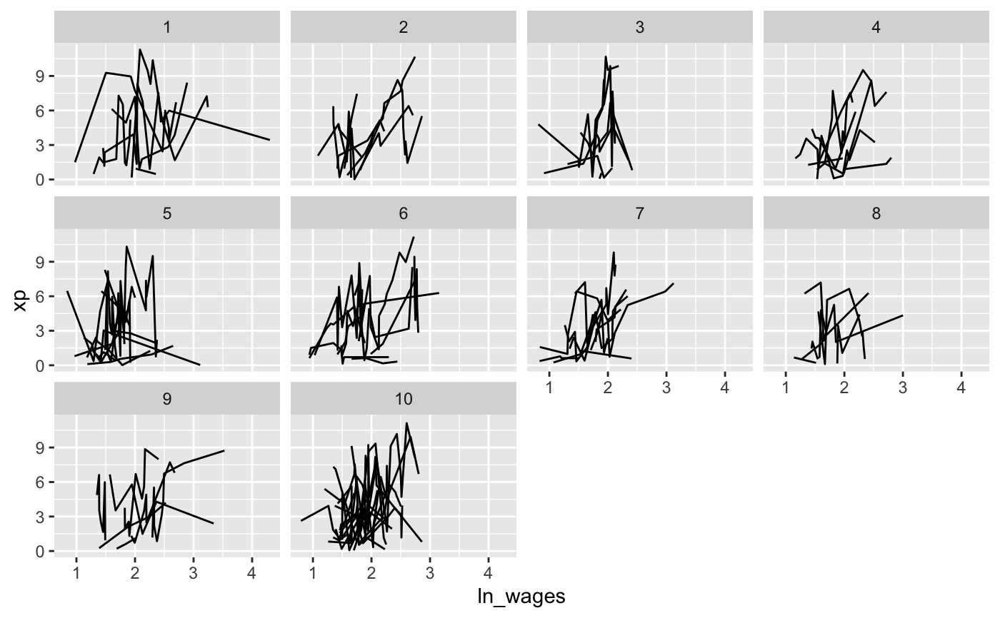
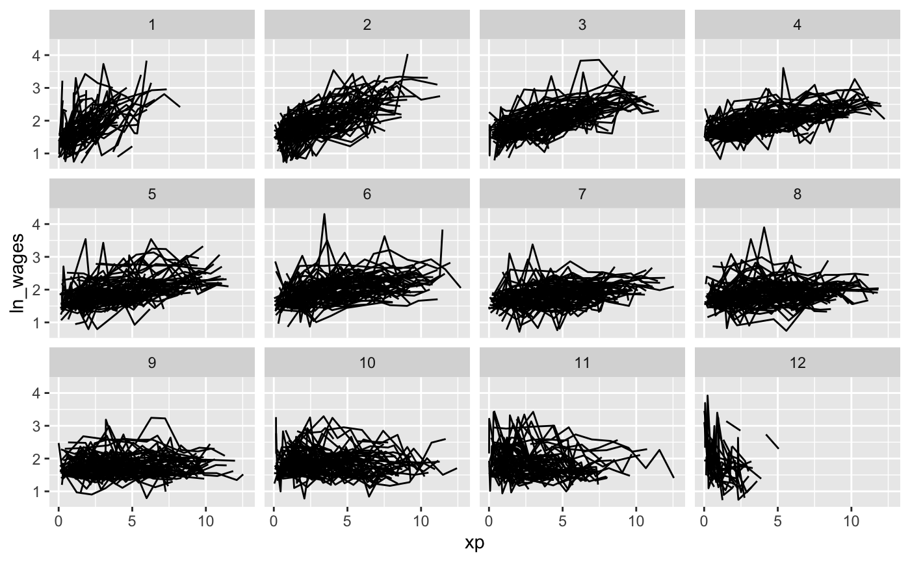
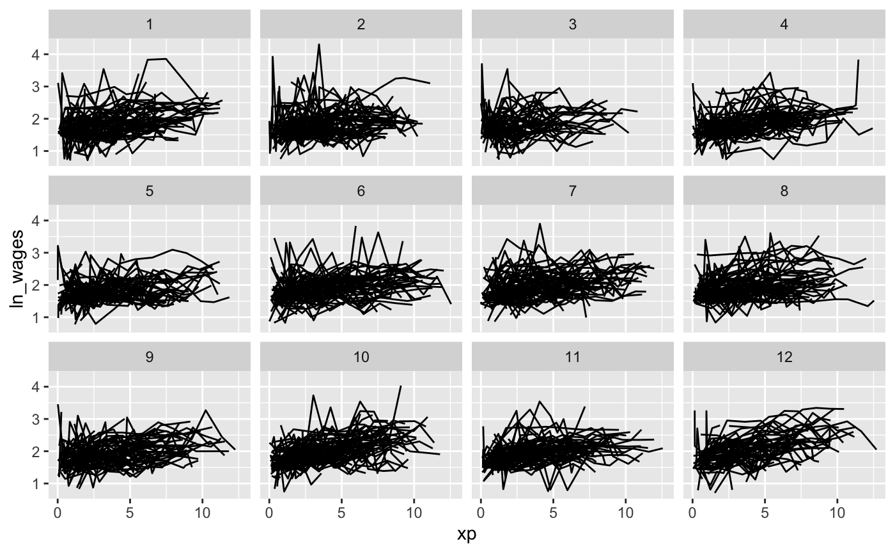

stratify_keys.RdTo look at as much of the raw data as possible, it can be helpful to
stratify the data into groups for plotting. You can stratify the
keys using the stratify_keys() function, which adds the column,
.strata. This allows the user to create facetted plots showing a more
of the raw data.
stratify_keys(.data, n_strata, along = NULL, fun = mean, ...)
| .data | data.frame to explore |
|---|---|
| n_strata | number of groups to create |
| along | variable to stratify along. This groups by each |
| fun | summary function. Default is mean. |
| ... | extra arguments |
data.frame with column, .strata containing n_strata groups
library(ggplot2) library(brolgar) wages %>% sample_frac_keys(size = 0.1) %>% stratify_keys(10) %>% ggplot(aes(x = ln_wages, y = xp, group = id)) + geom_line() + facet_wrap(~.strata)# now facet along some feature library(dplyr) wages %>% key_slope(ln_wages ~ xp) %>% right_join(wages, ., by = "id") %>% stratify_keys(n_strata = 12, along = .slope_xp, fun = median) %>% ggplot(aes(x = xp, y = ln_wages, group = id)) + geom_line() + facet_wrap(~.strata)wages %>% stratify_keys(n_strata = 12, along = unemploy_rate) %>% ggplot(aes(x = xp, y = ln_wages, group = id)) + geom_line() + facet_wrap(~.strata)